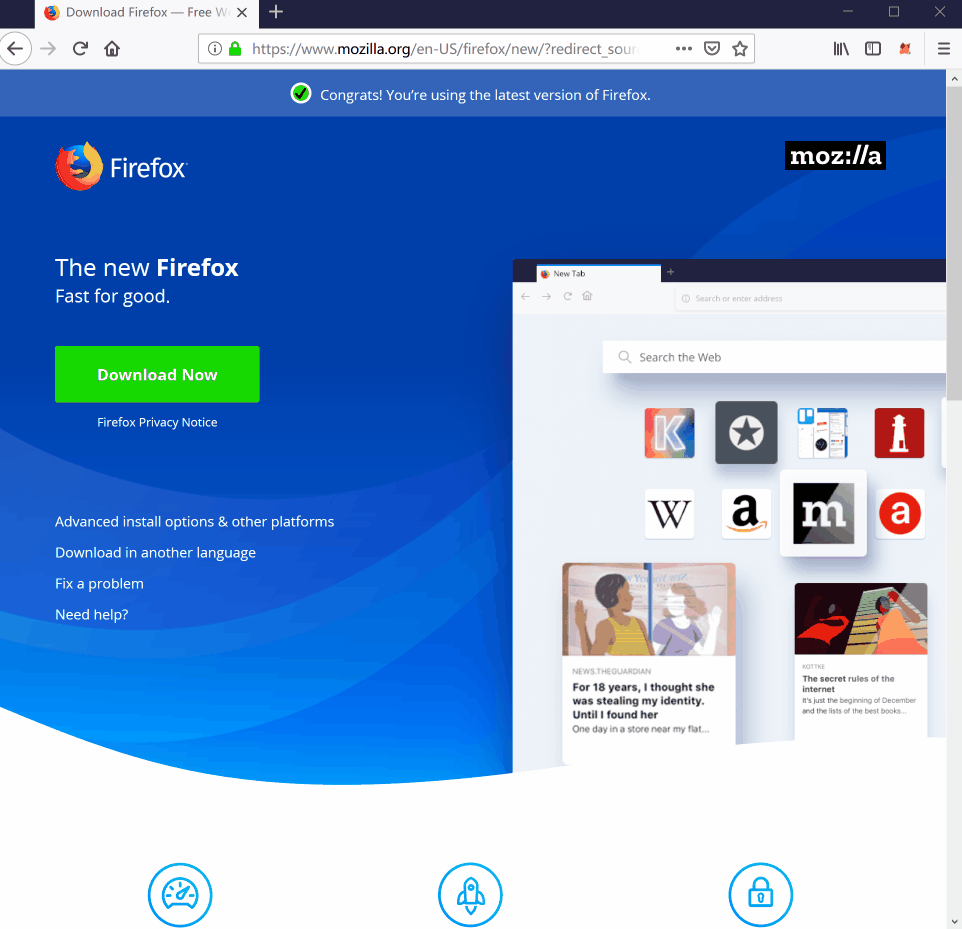
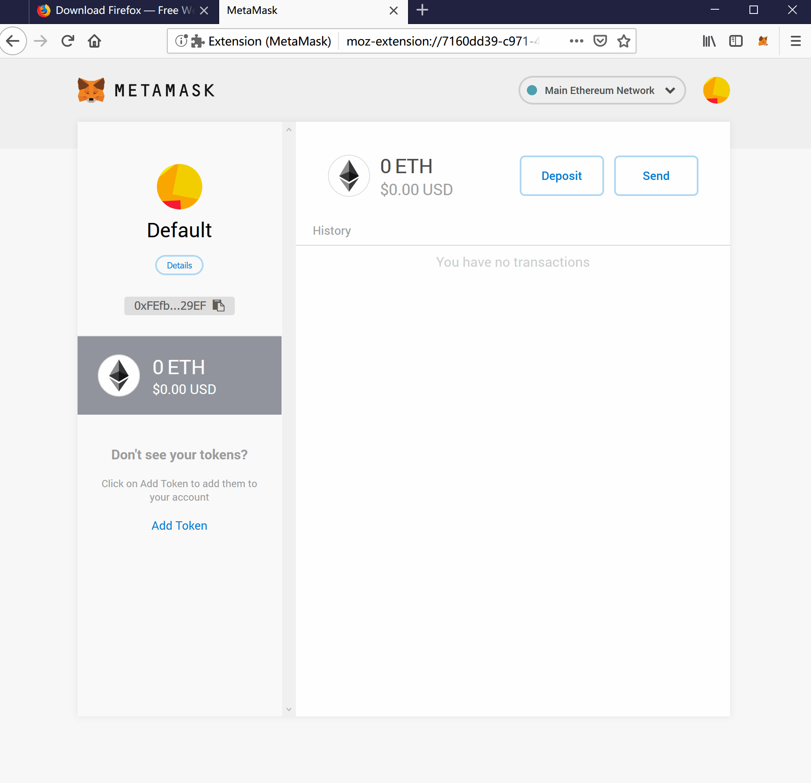

以太坊钱包: PC应用 MetaMask¶
{kind=link}
MetaMask 1 is a browser-extension for Google Chrome 2, FireFox 3 and Opera 4, which can help you interact with Ethereum blockchain.
Installation¶
With Google Chrome browser¶
{kind=link}
- Download and install Google Chrome browserDownload here: https://www.google.com/chrome/
- Search and install MetaMask extensionOpen in Chrome: https://chrome.google.com/webstore/search/MetaMask
If you can not visit Google, Firefox is PLAN B.
With FireFox browser¶
{kind=link}
- Download and install FireFox browserDownload here: https://www.mozilla.org/
- Search and install MetaMask extensionOpen in FireFox: https://addons.mozilla.org/en-US/firefox/search/?q=MetaMask
{kind=link}
Create a new wallet¶
If this is your first time using MetaMask 1, you need to create a new wallet as shown below.
Write them down ON THE PAPER is recommended.
From a security point of view, even if you save plain text on your computer or mobile phone, it is not guaranteed to be safe.
So, write them down on the paper, and keep it safe.
With these phrases, you can restore this wallet or reset the password via MetaMask 1.
{kind=link}
How to import another wallet?¶
If you need to import another wallet into MetaMask, you can use the private key.
Also, for security reasons, enter it, do not paste.
{kind=link}
Show Stoken balance of your wallet¶
Copy the address of Stoken Main Contract (Deprecated in Aug 2019),
it is 0x82070415FEe803f94Ce5617Be1878503e58F0a6a,
and use Add Token.
{kind=link}
Interact with Ethereum Contract¶
Here is a example:
- 1(1,2,3)
MetaMask https://metamask.io/
- 2
Google Chrome https://www.google.com/chrome/
- 3
FireFox https://www.mozilla.org/
- 4
Opera https://www.opera.com/